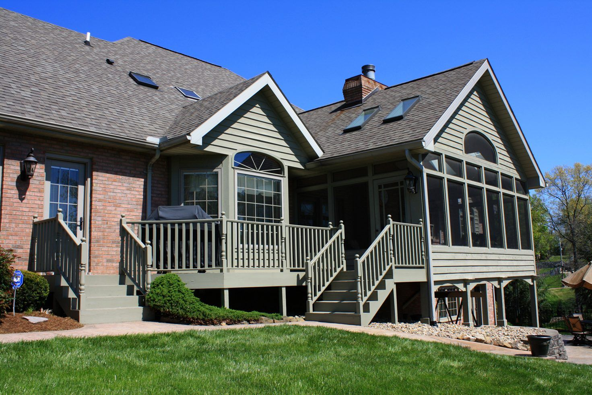
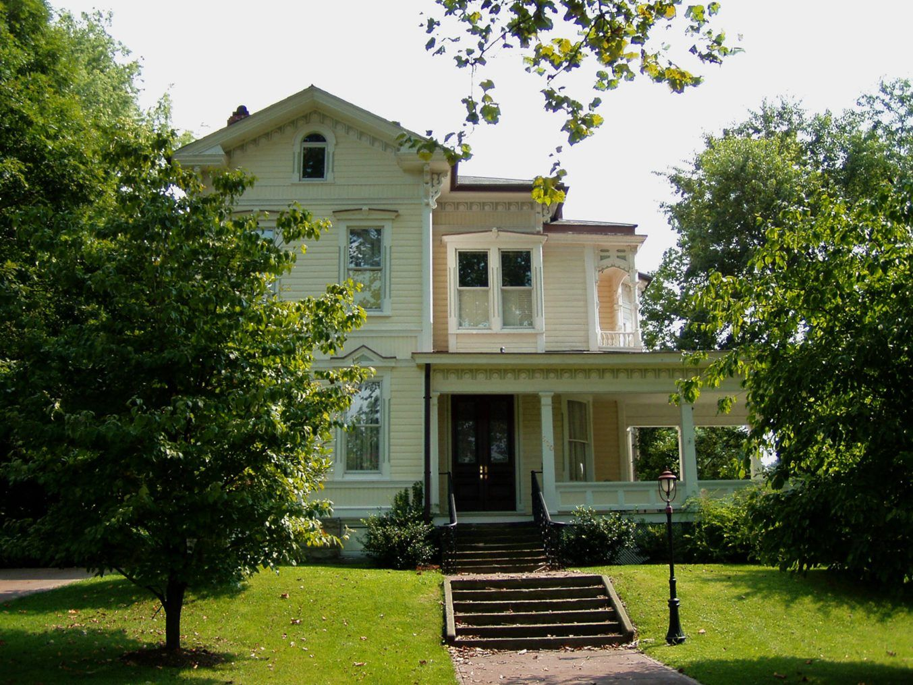
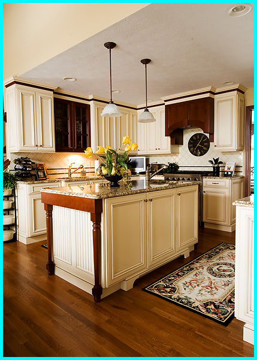
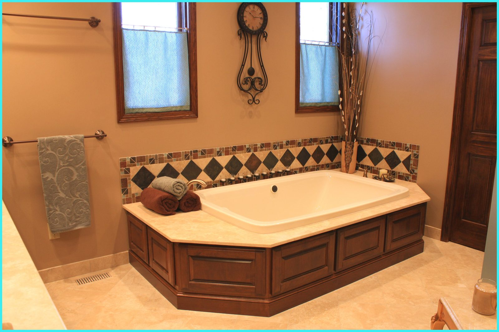
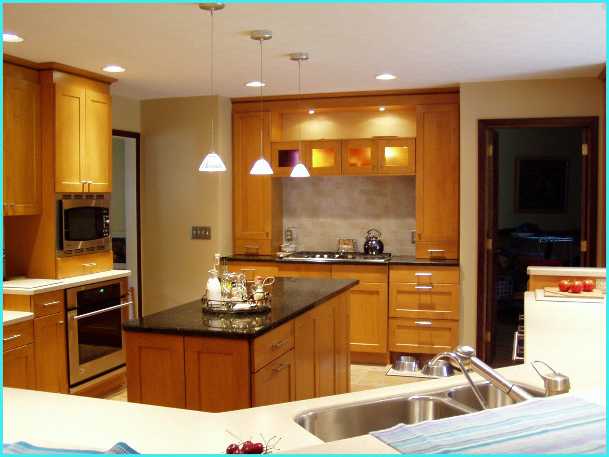

Country Addition
A connection from the primary living floor to the wooded backyard and pond.
Remodeling · Restoration · New Construction
Your home is too important to trust to just anyone. Imagine what’s possible with Harrison Construction.
Marietta, Ohio — No Limit Philosophy
When Dan and Gillian Harrison started Harrison Construction in 1981, they imagined a company that made remodeling and building an exciting proposition rather than a series of unpleasant surprises. That vision thrives today.
Our personal commitment is to understand your need, interpret your desire, research the feasibility and costs, develop the plan, and then execute the project. From a step repaired to a whole room remodeled, no job is too big or too small.
Personal communication, professionally trained work crews, and respect for your home and family guide our work. We’re a full-service remodeling contractor dedicated to quality work and complete customer satisfaction.

A connection from the primary living floor to the wooded backyard and pond.

Thoughtful remodeling while you continue living at home.

A master bath with custom mosaics, cabinetry, tub, and shower.
More from our clients ↗“What I like most is their attention to detail. And they are wonderfully professional and respectful.”
— Rose C.
A successful construction project is a day to day process, not simply an end product.
See how we work ↗Keep your home’s design integrity intact while bringing your ideas into focus.
Material selections, measurements, realistic estimates, and timelines before work begins.
A dedicated foreman, daily communication, and clean-up at the end of each day.
A comprehensive 24 month warranty from your project’s completion date.

Professional design, careful planning, quality materials, and expert craftsmanship. Create the kitchen and bath of your dreams.
1408 Colegate Dr. · Marietta, OH
Monday–Friday, 8 a.m.–5 p.m.
At age 16, Dan Harrison began to realize his talent and passion for construction.
Harrison Construction was included in Qualified Remodeler’s annual Top 500 list.
Safety awards presented at the Marietta Country Club on April 18, 2012.